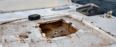
Soft Spot Repair
Find and repair soft or spongy areas caused by water intrusion or damaged core.
Learn MoreSoft spots, delamination, wet core and damaged fiberglass can turn a solid deck into a structural problem. Captain Levi’s repairs and rebuilds fiberglass boat decks across Tampa Bay.
Deck damage can involve cracked laminates, delamination, wet or deteriorated core, soft spots, flexing, impact damage, failed bonding and water intrusion. We inspect the entire structure and repair the root of the problem — not just the visible surface — to ensure a strong, long-lasting repair.

Find and repair soft or spongy areas caused by water intrusion or damaged core.
Learn More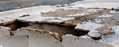
Repair delaminated fiberglass laminates and restore structural integrity.
Learn More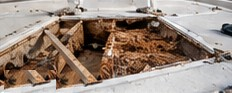
Remove and replace wet or deteriorated core with marine grade materials.
Learn More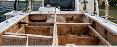
Rebuild damaged decks with new core, fiberglass laminates and proper bonding.
Learn More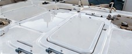
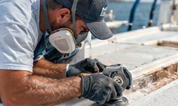
A proven step-by-step process using marine-grade materials to ensure a strong, durable, long-lasting repair.
We inspect the deck, core and structural components to find the real problem.
We carefully remove failed fiberglass, core and contaminated areas.
New core (as needed) and marine fiberglass fabrics bonded with epoxy or vinyl ester resin.
We fair the deck, apply gelcoat or non-skid, and finish for a clean, factory-quality look.
A strong deck is more than gelcoat. We repair and replace core material, fiberglass laminates and bonding systems using marine-grade materials like epoxy or vinyl ester resin, fiberglass fabrics and high-density core to restore strength and prevent future problems.
Learn More About Our Process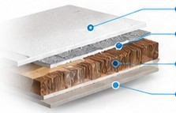
Real repairs. Real results. Stronger, safer decks built to last.
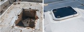
BEFORE AFTER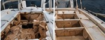
BEFORE AFTER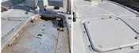
BEFORE AFTERDon’t ignore the warning signs. Deck problems often get worse over time and can lead to more extensive (and expensive) repairs if left untreated.
Our team can inspect your deck and let you know what’s needed.
Get a Free QuoteBased in Largo, Florida, Captain Levi’s provides both shop and mobile fiberglass deck repair throughout Tampa Bay and surrounding areas. We work on center consoles, bay boats, fishing boats, and more — from small deck repairs to full deck replacements.
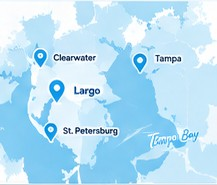
Get a free quote or talk directly with Captain Dave about your deck repair.
Have a soft spot, a spongy deck or a question about a deck rebuild, need a quote, or ready to schedule? Fill out the form or give us a call — we’ll get back to you as soon as possible. Your boat deserves the best, and we’re here to make it happen.
Tell us a little about your project and we’ll get back to you quickly.